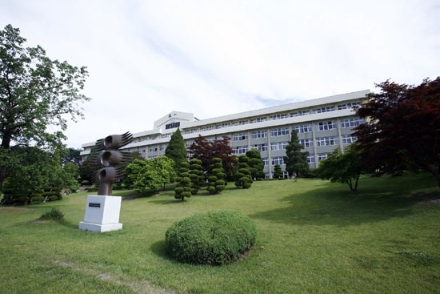
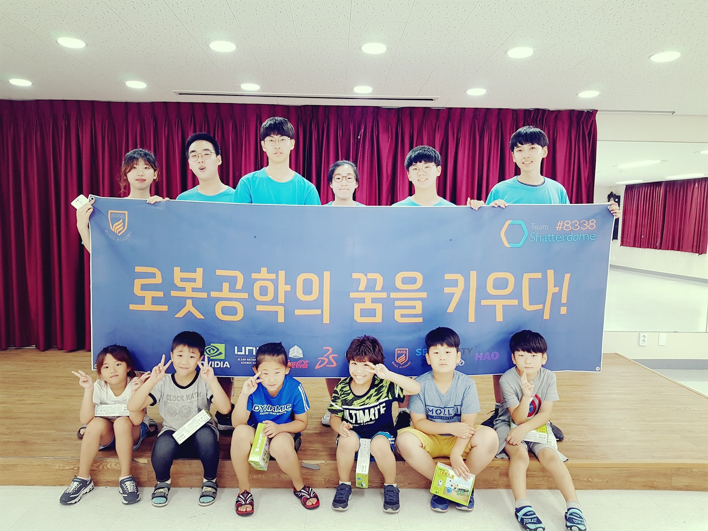
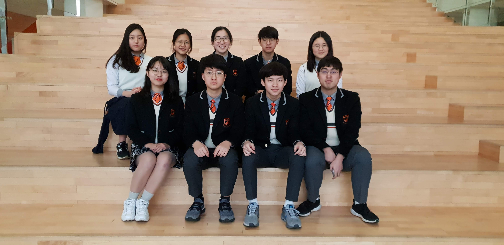
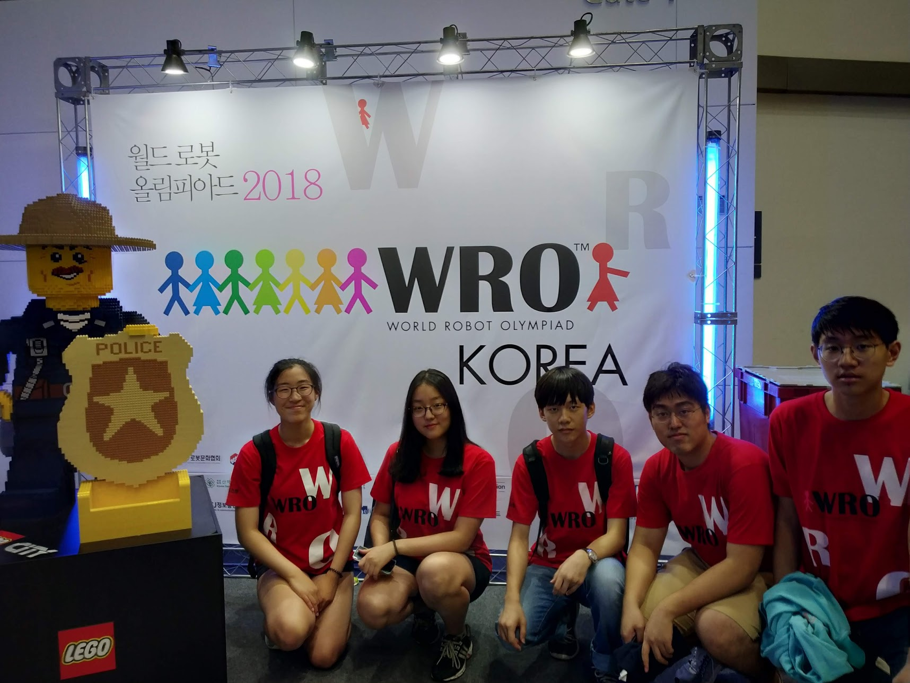

The History of
Team Shatterdome
-

2013
- FTC Reaches Bugil
- Bugil Academy has an exchange student program with Westlake High
School in Austin, TX. Team Appreciate participates in both FTC and
FRC, and they have multiple World Championship experiences. From
this exchange program, Steve learned about the FTC and worked on
making an FTC team in Bugil. He gathered team members and contacted
the local administrations to learn the specifics about the competition.
- FTC가 북일고등학교에 알려지다
- 북일고등학교는 미국 텍사스주의 Westlake 고등학교와 매년 교류 활동을 합니다. Westlake의 로봇 팀
Team Appreciate는 세계대회 출전 경험이 많고 실력있는 FTC, FRC팀입니다. 이 교류 활동을 통해서
정엽이는 FTC에 대해서 처음 알게 되었고, 정엽이가 팀원을 모집하고 창의공학교육협회에 연락을 하게되는
계기가 되었습니다.
-

2013
- Team Shatterdome Starts
- Team Shatterdome is an amateur club full with passion and curiosity. Without any knowledge
about robot construction, programming and driving, preparing for FTC was almost an impossible
task. We received help from friends in Westlake High School, and we used basic programming
skills we learned in International Young Leaders’ Forum in Australia and online videos.
We made many mistakes during the progress, but we all had fun.
- Team Shatterdome 시작
- 섀터돔은 열정과 호기심이 가득한 아마추어 동아리입니다. 팀원중에서는 로봇 설계에서 제작, 프로그래밍, 드라이빙에 이르기까지
전문적인 교육을 받은 경험이 없는 팀원들이 대부분이었습니다. 아는 것이 없기때문에 Westlake 고등학교에서 만난 친구와 인터넷
화상 채팅을 통해 도움을 받고, 호주의 International Young Leaders’ Forum에서 배운 짧은 프로그래밍 지식을 활용하고,
인터넷 강의를 통해 프로그래밍 언어를 익히며 로봇을 제작했습니다. 팀원 대부분이 처음 해보는 활동이었기 때문에 준비과정은 시행착오의 연속이었습니다.
-

2014
- Korea Robot Championship
- After we set our goal of participating in the World Championship, our team showed our potential.
We asked questions and followed anyone who could give advices for the preparation of FTC. As a result,
we could receive “Innovative Award” in the Korean Robot Championship and earned the ticket to the World
Championship in Saint Louis.
- KRC 참여
- 해외대회 출전이라는 목표를 세우면서부터 팀 섀터돔은 잠재력을 발휘하게 되었습니다. 학교에 계시는 관련 교과 외국인 선생님들을 귀찮을만큼 찾아다니며 로봇의 완성도를 높이고자 노력한 결과, 세계 대회의 한국 예선전이기도 했던 2014 KRC대회에서 팀 창단 4개월만에 당당히 “Innovation Award”를 수상하게 되고 세계 대회의 대한민국 대표팀으로 출전할 수 있는 자격을 얻게 되었습니다.
-

2014
- FTC World Championship
- This was our first World Championship, and it provided us a mind blowing, new experience.
At Worlds, we started to understand that enjoying the game is as important as, or even more
important than winning the game. Moreover, we met many experienced teams and got new ideas
for improving both our robot and outreach activities.
Rank: 49th
QP:6
RP:1856
- FTC 세계대회
- 북일고등학교는 미국 텍사스주의 Westlake 고등학교와 매년 교류 활동을 합니다. Westlake의 로봇 팀
Team Appreciate는 세계대회 출전 경험이 많고 실력있는 FTC, FRC팀입니다. 이 교류 활동을 통해서
정엽이는 FTC에 대해서 처음 알게 되었고, 정엽이가 팀원을 모집하고 창의공학교육협회에 연락을 하게되는
계기가 되었습니다.
-

2014
- Asian-Pacific Invitational 2014
- At the API 2014, we took into heart what we learned at Worlds and made an excellent end to a great rookie season.
Rank: 1st
QP: 18
RP: 1301
Eliminations: Finalist Alliance Captain with Robo Chicken Gator Flys of Papayaland (FTC 4238) as Alliance
Inspire Award 3rd Place Awardee
Rockwell-Collins Innovate Award Awardee
Think Award Finalist
Connect Award Finalist
Control Award Finalist
- Asian-Pacific Invitational 2014
- 아태평양 대표대회에서는 세계대회에서 배운점들을 통해, 매우 성공적인 루키 시즌의 마지막을 장식했습니다.
-

2014
- Cascade Effect Starts
- A new season with seven juniors and three sophomores starts!
Team Captain: Jung Yeop Kim
Construction Division: JJ Lim (head), Hyosik Kim, Samuel Jang
Documentation Division: Sunbin Kim (head), Anne Kil, Sojeong Lee
New Recruits: Rick Kim, Christine Go, Hoyoung Chae
- Cascade Effect 시즌 시작!
- 7명의 2학년, 그리고 3명의 1학년 팀원으로 새로운 시즌을 시작합니다.
팀 캡틴: 김정엽
컨스트럭션부: 임진영 (장), 김효식, 장성훈
다큐멘테이션부: 김선빈 (장), 길여경, 이소정
신입 멤버: 김성후, 고은비,
-

2015
- Korea Robotics Championship
- We tried harder to qualify for the World Championship, and won the Innovative Award
in the Korean regionals. Again, we were qualified for the Worlds for two consecutive years, a
nd were very proud of ourselves.
- KRC 참여
- 저희는 세계 대회에 다시 한번 출전하기 위해 많은 노력을 했고, 그결과 innovative award 를 수상하게 되었습니다. 저희는
2년 연속으로 세계대회에 진출할수있게 되었고, 제 자신들이 자랑스러웠습니다.
-
2015
- New Recruitments
- Two sophomores, Jinseo Kim and Haein(Daniel) Kim joined the team.
- 신입 팀원 선발
- 새학기가 시작되고, 2명의 신입 멤버 ( 김해인, 김진서) 가 팀에 합류하게 되었습니다.
-
2015
- FTC World Championship
- This was our second World Championship in St.Louis. All of us were very excited, and we were very happy when we won the Judges Award (Make it Loud).
- FTC 세계대회
- 저희는 모두 들뜬 마음으로 2번째 세계대회에 참가했으며, 자랑스럽게도 심사위원상을 수상하게 되었습니다.
-

2015
- New Recruitments
- After the World Championship, 6 more sophomores joined the team after a semester of testing period.
Minjae (Roy) Kim
Kyuwon (Sophia) Weon
Hyunsoo Yoo
Seung Ho (Sean) Ryu
Jewoo(Jeremy) Chang
Piljoo Kwak
- 신입 멤버 추가 선발
-
세계 대회이후, 6명의 추가 멤버를 모집하였습니다.
김민재
원규원
유현수
유승호
장제우
곽필주
-

2015
- New Generation
- The seniors decided to inherit their roles in the team and become mentors. Seonghu(Rick)
Kim and Hoyoung Chae became the co-captains of the team, along with 8 sophomore members.
Team Shatterdome now faces another challenge, but all of us are sure that we are capable
of exceeding the mentors.
- 셰터돔 2기 출범
- 3학년이 팀에서의 역할을 내려놓고 멘토가 되기로 결정했습니다. 따라서, 김성후와 채호영이 팀의 공동 캡틴이 되었으며,
8명의 1학년과 함께 셰터돔 2기를 이끌게 됩니다. 창립자들이 사라졌기 때문에
걱정도 되지만, 저희 모두는 이 상황을 헤쳐나갈 능력이있고, 선배들보다 좋은 성적을 거둘 자신이 있습니다.
-

2015
- Volunteering Work
- It is very important to show gracious professionalism and influence the local community.
In order to do so, we decided to proceed volunteering activities near our school. We contacted
nearby schools and hospitals to find the right place, and we were able to give a taste of STEM
education to the minority students of the rural area. Also, we went to a hospital in Seoul to
educate robotics to kid patients. All of the students enjoyed the program a lot, and we were
very satisfied by that.
- 여름방학 봉사활동
- 여름 방학을 맞아 프로정신을 실현하기 위해 봉사활동을 하였습니다. 천안지역의 도장초등학교와 온주사회복지관에서 저소득층
아이들을 상대로 로봇 키트 교육을 실시하였습니다. 또, 순천향대학병원에서 장기 입원 환자 아이들을 위해 로봇을 같이 만들어 보는
시간을 가졌습니다. 행복해하는 아이들을 보며 뿌듯함과 성취감을 느낄수 있었습니다.
-

2015
- FTC RES-Q Starts!
- New mission for 2015-2016 FTC was released – all of us are willing to challenge the new RES-Q mission.
- FTC RES-Q 미션 시작!
- 2015-2016 시즌 FTC의 주제인 RES-Q가 발표되었습니다. 저희는 기쁘게 새로운 도전을 맞이했습니다.
-
2015
- AIR-SPORTS Competition
- 8 Sophomores were engaged in a competition named “Air-Sports”. Since it was our first time of
making an actual robots, we made a lot of mistakes and faced numerous obstacles. However,
we were able to finish a real robot, and we won the 3rd place alliance award and an engineering
notebook award.
- 에어스포츠 경진대회 참가
- 8명의 1학년이 에어스포츠 경진대회에 참가하였습니다. 실질적으로 제대로된 로봇을처음 만들어보는 기회였기 때문에 시행착오도
많이 겪고 실수도 많이 하였지만, 결국 로봇을 하나 만들어 냈고 3등 동맹상과 기술보고서상을 수상하였습니다.
-

2016
- Korea Robotics Championship
- Team Shatterdome, as always, struggled in the KRC to be invited from the World Championship.
After sets of hard works and hardships, the Team finally ranked the 2nd place in the Elimination Match,
being awarded the Winning Alliance Award. This made the team be invited from the FTC Asia-Pacific Invitation.
- KRC 참여
- 팀 셰터돔은 올해도 세계대회 출전권을 얻기 위해 KRC에 참여하여 열심히 노력하였습니다. 우여곡절 끝에 Elimination Match에서 전체
2위에 랭크되며 Winning Alliance Award를 수상하였고, 7월에 열리는 FTC아태평양대회 출전권 또한 얻게 되었습니다.
-
2016
- New Generation
- The seniors decided to inherit their roles in the team and become mentors. Jinseo Kim was
elected as captain and Daniel Kim was elected as vice-captain of the team, along with the
other members. Team Shatterdome now faces another challenge, but all of us are sure that
we are passionate enough to make this change as a turning point to improve.
- 셰터돔 3기 출범
- 팀을 맡아왔던 3학년의 두 코캡틴이 캡틴 자리를 내려놓고 멘토로서의 역할에 충실하기로 결정하였습니다. 따라서 김진서가 캡틴,
김해인이 부캡틴으로 선출되었고, 셰터돔 3기가 출범하게 되었습니다. 팀 멤버들 모두는 팀이 이러한 변화를 발전의 전환점으로
삼기에 충분히 열정적이라고 자부합니다.
-

2016
- New Recruitments
- As a new semester has begun, 5 sophomore members have joined the team.
Hojune (Thomas) Kim – Builder of Construction Division
Jeongheon (Edward) Lee – Builder of Construction Division
Gene Yun – Programmer of Construction Division
Namjun Huh – Programmer of Construction Division
Soungbin Park – Outreach and Documentation Division
- 신입 멤버 추가 선발
- 새 학기가 시작됨에 따라, 다섯 명의 1학년 학생들에 팀에 들어왔습니다.
김호준 – 컨스트럭션 부서 빌더
정헌 – 컨스트럭션 부서 빌더
윤진 – 컨스트럭션 부서 프로그래머
허남준 – 컨스트럭션 부서 프로그래머
박성빈 – 아웃리치 및 다큐멘테이션 부서
-

2016
- FTC Asia-Pacific Invitational
- After lots of experiences gained from the KRC, Team Shatterdome started the new challenge of the FTC Asia-Pacific Invitational 2016. With our passionate members, the Team successfully attended to the first world championship of the 3rd generation.
The Team was awarded:
-Motivate Awardee
-Connect Award Finalist
- FTC Asia-Pacific Invitational
- KRC에서의 난관과 이를 통해 얻은 경험을 바탕으로 팀 셰터돔은 호주에서 열린 FTC Asia-Pacific Invitational 2016에 참여하였습니다. 열정적인 팀원들과 팀의 도전정신으로 3기의 첫 세계대회 도전을 성공적으로 마칠 수 있었습니다.
이 대회에서 팀은 다음 상을 수상했습니다.
-Motivate Award 수상
-Connect Award 최종수상후보
-

2016
- Summer Vacation Volunteering Activity
- Continuing the last year’s volunteering activities, our team included one more institution to conduct volunteering activity in order to facilitate STEM education and promote FTC/FLL
to younger generations.
Team Shatterdome visited kindergarten, elementary school, social welfare center, and university hospital
in the local region. Consequently, we were able to interact with more than 100 kids throughout the summer vacation
and spread FIRST virtues. Also, it was satisfying to see that many kids were willing to participate in FLL / Jr. FLL.
It was a meaningful experience for all of the participants.
- 여름방학 봉사활동
- 작년의 봉사활동에 이어서, 올해에는 한 개가 늘어난 총 4곳의 기관에서 어린 세대들에게
STEM교육 진흥과 FTC/FLL 을 알리기 위해 봉사활동을 진행하게 되었습니다.
팀 셰터돔은 근교에 있는 유치원, 초등학교, 복지관, 그리고 대학병원을 방문했습니다.
그 결과로, 저희는 100명이 넘는 아이들과 방학사이에 만나며 FIRST정신을 퍼뜨릴수 있었습니다.
또한, 많은 학생들이 저희의 설명을 듣고 FLL/Jr.FLL에 참여하고 싶단 의사를 표출해 이 역시 저희를 뿌듯하게 해주었습니다.
올해 진행한 봉사활동 역시 모든 참가들에게 의미있는 경험을 선사해주었습니다.
-

2016
- Velocity Vortex Mission Release
- A new mission for the upcoming FTC 2016-2017 Season was released.
This year’s mission is named as “Velocity Vortex.”
We are looking forward to developing ourselves once more via this season
and enjoy the competition.
- Velocity Vortex 미션 발표
- 새 시즌의 미션이 발표되었습니다.
작년의 미션과는 다르게 새로운 부분이 많아
한편으로는 떨리기도 하고 다른 한편으로는 설레기도 합니다.
이번 시즌을 치루면서 팀적으로, 또 팀원 개인적으로도 더 발전할수 있는
계기가 됐으면 좋겠고 경쟁을 즐기며 좋은 성과를 냈으면 좋겠습니다.
-

2017
- Korea Robotics Championship
- In January 21st, 2017, Team Shatterdome’s eleven members have attended to the Korea Robot Championship of the 2016-2017 FTC Velocity Vortex Season. As a reward for the challenges
and efforts that the team members have shown, Team Shatterdome marked the third place in the qualification round and was provided rights to choose our alliance as a captain team.
Team Shatterdome and the alliances won the semifinal, but have unfortunately lost the Final, concluding the tournament as the runner-up.
However, despite to their defeat in the final, Team Shatterdome was awarded Inspire Award, the grand prize of the championship for
the first time in the history of the team. Plus, this award qualified Team Shatterdome to join the FTC World Championship as a Korean national team.
Team Shatterdome would like to express our deep sense of gratitude for the supports of our sponsors, parents, alliances and our coach.
- KRC 대회 Inspire Award 수상
- 2017년 1월 21일, 팀 셰터돔의 11명의 멤버들은 올해도 2016-2017 코리아로봇챔피언십에 참가하였습니다. 지난 시즌들의 시행착오를 면밀히 분석하고 이에 대한 피드백을 통해 대회 준비 과정에서의
효율성을 끌어올리고 이는 체계적인 제작, 연습, 아웃리치 활동으로 이어졌습니다. 이에 보답하듯 팀 셰터돔의 로봇 ‘드라군’은 예선전 3위라는 호성적으로 직접 동맹 팀을 선정할 수 있는 캡틴 팀에 선정되었고,
팀의 스카우팅 기술을 통해 팀의 약점을 잘 메워줄 수 있는 팀을 분석하여 동맹을 구성한 결과 4강전에서 좋은 성과를 거둘 수 있었습니다. 비록 결승에서는 아쉽게 패했지만, 멤버들 모두는 2위라는 성적을
기쁘게 받아들이고 있습니다.
또한, 비록 로봇 토너먼트에서는 패배했으나 로봇 제작, 디자인, 엔지니어링 노트, 아웃리치 활동 등 팀의 한 시즌 역량을 모두 보는 시상식에서 팀 셰터돔은 3전4기 끝에 마침내 Inspire Award를
수상하였습니다. 팀 멤버들 모두가 로봇에 대한 열정 하에 하나가 되어 노력한 결과, 마침내 팀이 그동안 꿈꿔오던 상을 수상하게 되었고, FTC World Championship에 한국 대표로 참가할 기회를 당당히 따내었습니다.
팀 셰터돔이 이토록 우수한 성과를 거둘 수 있게 물심양면으로 후원해 주신 스폰서, 부모님, 그리고 코치님께 깊은 감사의 마음을 표합니다.
-

2017
- FTC World Championship
- This April, Team Shatterdome went to St.Louis, Missouri and participated in the FTC World Championship as the Korean Representative.
As beginners in world level robotics, our members experienced how to participate in an international competition, work as a team, and face best teams of the world.
We promised ourselves to incorporate our experience gained during this event into our team’s next season plans so that we can advance to World Championships once more.
- FTC 세계 대회
- 지난 4월, 팀 셰터돔은 미주리 주 세인트루이스에서 열린 FTC 세계 대회에 참가하였습니다.
비록 한국 대회 우승팀이지만 세계 대회에서는 경험이 적은 초보 팀은 고로, 저희 팀 멤버들은 세계 무대에 서보기,
팀워크 향상하기, 그리고 세계적 수준의 팀들과 경기해보기 등의 경험적 측면에 더욱 초점을 맞추었습니다.
팀 셰터돔은 또한 이번 대회에서 얻은 경험을 토대로 좋은 내년 계획을 세워 다음 해에도 세계대회에 진출할 것을 스스로 약속했습니다.
-

2017
- Summer Vacation Volunteering Activity
- Continuing every year’s volunteering activities, our team conducted volunteering activity
in three institutions to facilitate STEM education and promote FTC/FLL to younger generations.
In this summer vacation, Team Shatterdome visited elementary school, social welfare center,
and university hospital in the local region. At the end of the vacation, we could interact
and spread FIRST virtues with various children. Children showed their will to participate
in this activity again next year while assembling their robots by themselves, which made
this activity meaningful. Through this summer vacation volunteering activity, Team Shatterdome
could step closer to our goal in annuary volunteering activity.
- 여름방학 봉사활동
- 매해 해온 봉사활동에 이어서, 올해에는 총 3곳의 기관에서 어린 세대들에게 STEM교육 진흥과 FTC/FLL 을 알리기 위해 봉사활동을
진행하게 되었습니다. 팀 셰터돔은 이번 여름방학 때 초등학교, 복지관, 그리고 대학병원을 방문했습니다. 그 결과로, 저희는 방학 사이에
다양한 연령대의 아이들에게 FIRST정신을 퍼뜨릴수 있었습니다. 봉사활동 후에 아이들이 자유롭게 로봇을 조종하며 내년에도 참여하고
싶다는 의사를 보여 더욱 뿌듯한 봉사활동이 되었습니다. 팀 셰터돔이 이번 봉사활동을 통해 이루고자 했던 잠재적 목표에 한발 더
다가설 수 있던 뜻깊은 경험이었습니다.
-
2017
- Sharing Experience in UNIST
- For the second time in the history of our team, our members were invited as a guest speaker of
a Teenager Supercomputing Camp hold in Ulsan National Institution of Science and Technology.
As a robotics team with years of experience, we talked about our FTC competitions, teambuilding,
and future of Artificial Intelligence technology. It was an honorous experience meeting the inspiring
brains of Korea.
- UNIST 슈퍼컴퓨팅 캠프 초청강연
- 올해 두 번째를 맞이하여, 팀 셰터돔의 멤버들은 UNIST에서 개최된 한국슈퍼컴퓨팅캠프에 초청 강연자로 참여할 기회를 얻었습니다.
수 년째 로봇 대회에 참여한 경력이 있는 팀으로서 로봇 대회들에 참여한 경험, 하나의 팀으로 활동하는 과정, 그리고 AI 기술의 미래에
대해 이야기해볼 수 있었습니다. 한국의 미래 공학도들을 만날 수 있는 진귀한 경험이었습니다.
-

2017
- Relic Recovery Mission Release
- A new mission for the upcoming FTC 2017-2018 Season has been released.
This year’s mission is named as “Relic Recovery.”
We are looking forward to developing ourselves once more via this season
and enjoy the competition.
- Relic Recovery 미션 발표
- 새 시즌의 미션이 발표되었습니다.
작년의 미션과는 요구하는 기술 자체가 달라
한편으로는 떨리기도 하고 다른 한편으로는 설레기도 합니다.
이번 시즌을 치루면서 팀적으로, 또 팀원 개인적으로도 더 발전할수 있는
계기가 됐으면 좋겠고 경쟁을 즐기며 좋은 성과를 냈으면 좋겠습니다.
-

2017
- Air-Sports Competition Champions
- Team Shatterdome’s sophomore newbies won the first place in the 2017 Air-Sports Championship,
a competition held by the Ministry of Trade, Industry and Energy of Republic of Korea and Korea
Institute for Robot Industry Advancement. Since our sophomores have put in lots of effort to prepare
for this event, please give them a round of applause!
- Air-Sports 경진대회 종합우승
- 팀 셰터돔의 1학년 신입 멤버들이
산업통산자원부와 한국로봇산업진흥원이 주최한
2017 Air-Sports 경진대회에서 우승을 차지했습니다!
팀에 새로 들어온 멤버들이 구슬땀을 흘리며 거둔 결실에 대해 많은 박수 부탁드립니다!
-

2017
- Qualcomm Sponsor
- Team Shatterdome was chosen to be the
beneficiary of the Qualcomm Scholarship for two consecutive seasons!
Thank you Qualcomm and FEST, the Korean FIRST board!
- 퀄컴 장학팀 2년 연속 선정
- 창의공학교육회 FEST의 주선 하에,
팀 셰터돔이 2년 연속 Qualcomm 장학팀으로 선정되었습니다!
팀을 위해 아낌없는 도움을 주신 Qualcomm과 FEST에 감사드립니다!
-

2018
- Best National Robot Thesis
- Using the data gathered from participating in the past FTC missions,
junior members of Team Shatterdome wrote a thesis on
“Designing a shooting robot that minimizes the effect of voltage supply”
and were chosen as the Best Thesis Writers!
Please give a round of applause to our members!
- 한국로봇종합학술대회 우수논문상 수상
-
팀 셰터돔의 2학년 멤버들이 제 13회 한국로봇종합학술대회에 출전하여
FTC에 참가하며 축적한 데이터를 기반으로 집필한
“전압 영향을 최소화하는 슈팅 로봇 개발” 논문으로 우수논문상을 수상했습니다!
많은 격려와 칭찬 부탁드립니다!
-

2018
- Korea Robot Championship
- Team Shatterdome participated in the
fifth Korea Robot Championship in team history.
We were presented with the second Inspire Award.
Detroit, here we go!
- 한국로봇종합학술대회 우수논문상 수상
-
팀 셰터돔이 팀의 다섯 번째 시즌을 맞아
코리아로봇챔피언십에 참가했습니다.
작년에 이어 Inspire Award를 수상하며
미국 미시건 주 디트로이트에서 열릴
World Championship에 진출하게 되었습니다.
-

2018
- FTC World Championship
- Team Shatterdome participated in the
2017-18 FTC World Championship’s second leg
that was held in Detroit, MI.
Thanks to the judges who acknowledged our
passion and strive towards feedback,
we were presented with the Judges Award,
for the second time in the history of the team.
Thank you judges and our sponsors!
- FTC World Championship
-
팀 셰터돔은 미국 미시건 주 디트로이트에서 열린
2017-18 FTC World Championship에 참가하였습니다.
우리의 열정과 발전을 위한 노력을 높게 평가해 주신
심사위원들 덕분에, 3년 만에 심사위원 상을 다시 수상했습니다.
심사위원 분들과 스폰서들께 감사드립니다.
-

2018
- New generation [6th]
- The seniors who led the team to best performance decided to have a new start as a mentor.
With Won Jung Lee elected as captain and Juhee Lee elected as vice-captain of the team,
the 6th Shatterdome was launched.
Being encouraged by positive energy from the five sophomore members,
Team Shatterdome is filled with enthusiasm for success the best season.
Geunhee Lee – Builder of Construction Division
Hyungkyu Lee – Builder of Construction Division
Giung Lee – Programmer of Programming Division
Suyeon Cha – Programmer of Programming Division
Soomin Hong – Outreach & Documentation division
- 셰터돔 6기 출범
-
팀을 최고의 실적으로 이끌었던 3학년이 멘토로서의 새 시작을 하기로 결정하였습니다.
그 뒤를 이어 이원정이 캡틴, 이주희가 부캡틴으로 선출된 셰터돔 6기가 출범하게 되었습니다.
다섯 명의 1학년 신입 멤버들과 함께 팀 셰터돔은 긍정적 변화에 힘 입어
최고의 시즌을 만들어 나갈 열정으로 가득 차 있습니다.
이근희 – 컨스트럭션 부서 빌더
이형규 – 컨스트럭션 부서 빌더
이기웅 – 프로그래밍 부서 프로그래머
차수연 – 프로그래밍 부서 프로그래머
홍수민 – 아웃리치 및 다큐멘테이션 부서 멤버
-

2018
- Summer Vacation Volunteering Activity
- Team shatterdome has consistently done volunteering activities to practice the team spirit, contributing to the growth of STEM education.
In this summer vacation, Team Shatterdome visited WRO(World Robot Championship), a social welfare center, and youth camp and provided drone education with donating the team’s talent.
During volunteering, various children actively participated, showing great interest in the education.
Team shatterdome will promise that we will continue volunteering activity to facilitate STEM education.
- 여름방학 봉사활동
-
팀 셰터돔은 미래세대 STEM교육 발전에 기여하겠다는 팀의 정신을 실천하기 위해 꾸준히 자원봉사활동을 진행해왔습니다.
올해는 WRO(세계 로봇 올림피아드), 온주사회복지관, 그리고 청소년캠프를 방문해 드론교육 및 재능나눔을 실시했습니다.
봉사활동 동안 다양한 연령대의 아이들이 로봇에 흥미를 보이며 적극적으로 참여해주었습니다.
앞으로도 팀 셰터돔은 STEM교육 진흥을 위해 봉사활동을 이어나갈 예정입니다.
-

2018
- Rover Ruckus Mission Release
- A new mission “Rover Ruckus” for the upcoming FTC 2018-2019 Season was released.
The significance of interdepartmental interaction and effort as the one team increased as the mission got complicated.
Following the last season, the team Shatterdome will do our best to bring about satisfied result through maximizing each members’ ability and teamwork
- Rover Rocus 미션 발표
-
새 시즌의 미션 “Rover Rocus”가 발표되었습니다.
미션이 복잡해진 만큼 부서간의 소통과 팀 전체의 노력의 중요성이 커졌습니다.
팀 셰터돔은 개개인의 능력과 팀워크를 최대치로 끌어올려 지난 시즌에 이어 좋은 결과를 가져오도록 최선을 다하겠습니다.